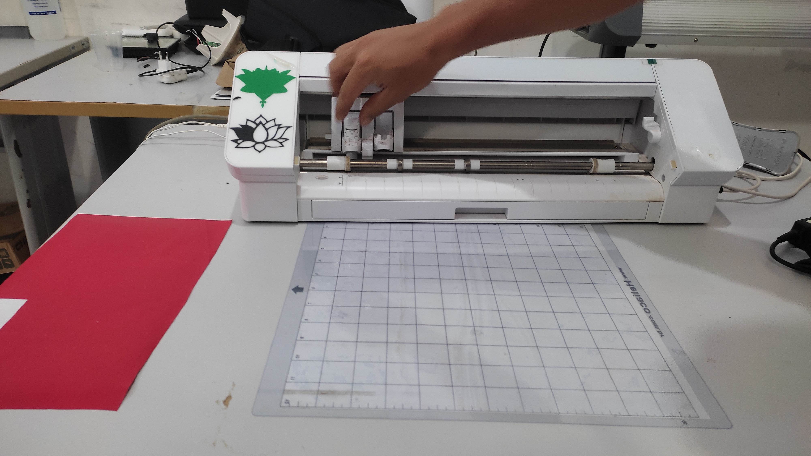
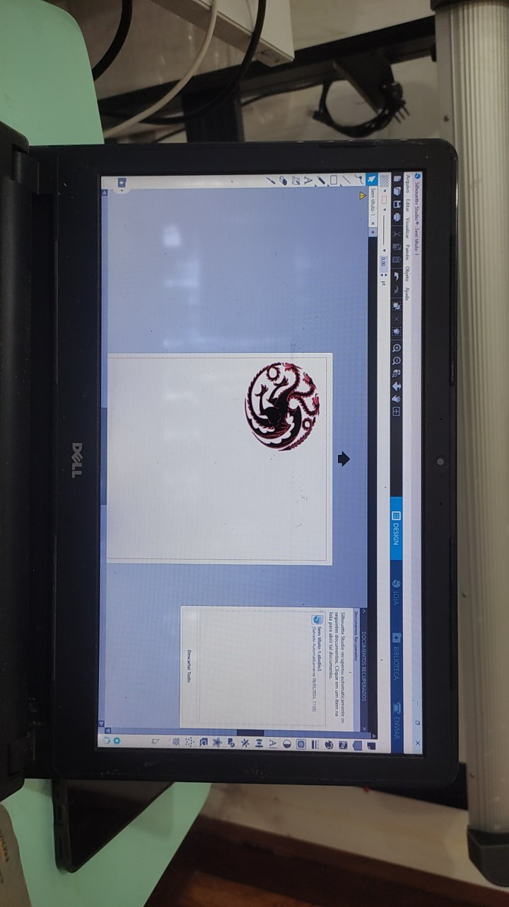
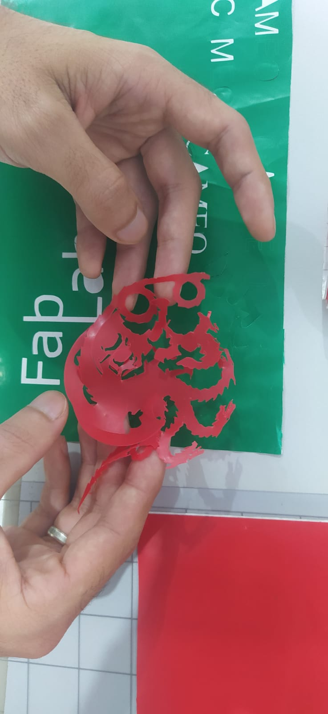

Chapter 5 Plotter
5.1 O Que é uma Plotter
A plotter é uma máquina projetada para desenhar com precisão gráficos, textos e desenhos em larga escala. Utilizando canetas, cortadores ou outros instrumentos de desenho, a plotter pode criar representações detalhadas e de alta qualidade em diversos materiais, como papel, vinil e tecidos. Esta tecnologia é amplamente utilizada em indústrias que necessitam de precisão gráfica, como arquitetura, engenharia, publicidade e design gráfico.
As plotters começaram a ser utilizadas na década de 1960 e desde então evoluíram significativamente, incorporando avanços tecnológicos que aumentaram sua precisão e versatilidade. Hoje, as plotters podem ser encontradas em diversos formatos, desde modelos de mesa compactos até grandes máquinas industriais capazes de produzir gráficos em tamanhos consideráveis.
5.2 Como Funciona a Plotter
5.2.1 Estrutura e Componentes
A plotter funciona movendo uma caneta ou ferramenta de corte sobre a superfície do material, seguindo um caminho predefinido para criar o desenho ou corte desejado. Os principais componentes de uma plotter incluem a cabeça de desenho, os eixos de movimentação, o sistema de alimentação de material e o software de controle.
5.2.1.1 Cabeça de Desenho
A cabeça de desenho da plotter pode conter diferentes tipos de ferramentas, como canetas, cortadores ou até mesmo ferramentas de gravação. A escolha da ferramenta depende da aplicação específica, seja para desenhar linhas precisas ou cortar formas complexas.
5.2.1.2 Eixos de Movimentação
Os eixos de movimentação controlam o movimento da cabeça de desenho em diferentes direções. A maioria das plotters opera em um sistema cartesiano, com eixos X e Y movendo a cabeça horizontal e verticalmente sobre a superfície do material.
Alguns modelos avançados também possuem um eixo Z para ajustar a altura da ferramenta.
5.2.1.3 Sistema de Alimentação de Material
O sistema de alimentação de material garante que o material a ser trabalhado seja movido de forma controlada e precisa sob a cabeça de desenho. Este sistema pode variar dependendo do tipo de plotter e do material utilizado, mas geralmente envolve roletes e guias que mantêm o material estável durante o processo.
5.3 Experiência Prática: Projeto do Símbolo Targaryen
Durante o treinamento prático com a plotter, desenvolvi um projeto que envolveu a criação do símbolo da Casa Targaryen de Game of Thrones. Abaixo, descrevo detalhadamente cada etapa do processo, incluindo as instruções recebidas e a execução do projeto.
5.3.1 Recebendo as Instruções
Primeiro, recebemos instruções detalhadas sobre como utilizar a plotter e configurar o projeto. Essas instruções incluíam passos desde a preparação do material até o ajuste dos parâmetros da máquina.

5.3.2 Escolhendo e Preparando o Desenho
Escolhi o símbolo da Casa Targaryen como desenho para o projeto. Este símbolo foi preparado digitalmente e ajustado para garantir que estivesse pronto para ser traçado pela plotter. O arquivo digital foi então importado para o software de controle da plotter, onde fiz os ajustes necessários nos parâmetros de desenho.
5.3.3 Processo de Desenho
Com os parâmetros configurados, iniciei o processo de desenho. A plotter começou a traçar o símbolo da Casa Targaryen com precisão, movendo a caneta ao longo dos eixos X e Y conforme o design digital. Durante o processo, monitorei o progresso para garantir que tudo estava saindo conforme o planejado.
A precisão da plotter foi evidente à medida que o desenho tomava forma, com linhas claras e detalhadas que capturavam a complexidade do símbolo. Ajustei a pressão da caneta para garantir que o traçado fosse consistente e não danificasse o material.
5.3.4 Resultado Final
O resultado final foi um desenho detalhado e preciso do símbolo da Casa Targaryen. A plotter executou o trabalho com grande precisão, capturando todos os detalhes do design original.
5.3.5 Reflexão Sobre o Processo
A experiência prática com a plotter foi extremamente enriquecedora. Aprender a configurar e operar a máquina, além de ver o projeto digital se transformar em um desenho físico, foi uma oportunidade valiosa para entender a aplicação prática desta tecnologia. A precisão e a eficiência da plotter destacam seu valor em processos de design e fabricação.
Durante o processo, foi importante ajustar cuidadosamente os parâmetros da plotter, como a pressão da caneta e a velocidade de desenho, para obter o melhor resultado. A prática demonstrou que mesmo pequenos ajustes podem ter um impacto significativo na qualidade do trabalho final. Este projeto não apenas aprimorou minhas habilidades técnicas, mas também me proporcionou uma compreensão mais profunda das capacidades e limitações da plotter.
A plotter é uma ferramenta poderosa para criar desenhos e cortes precisos em uma variedade de materiais. A experiência prática reforçou a importância de um planejamento meticuloso e da configuração adequada para alcançar resultados de alta qualidade na fabricação digital.